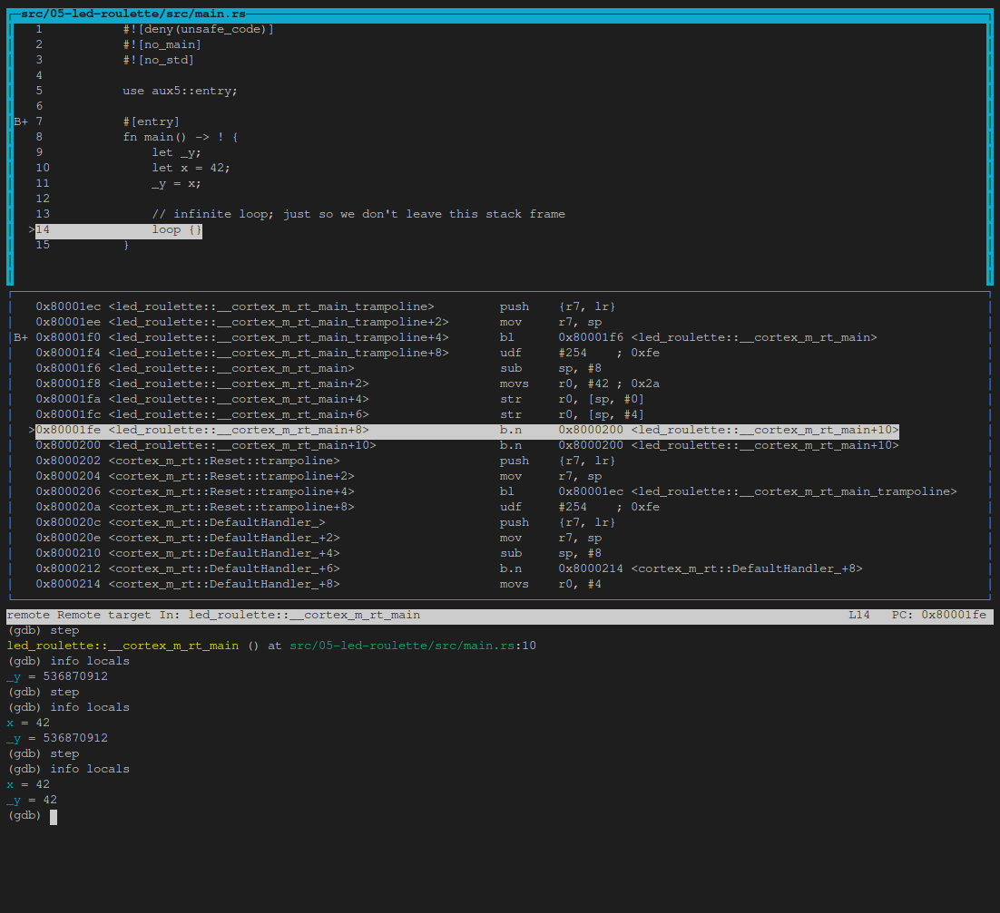
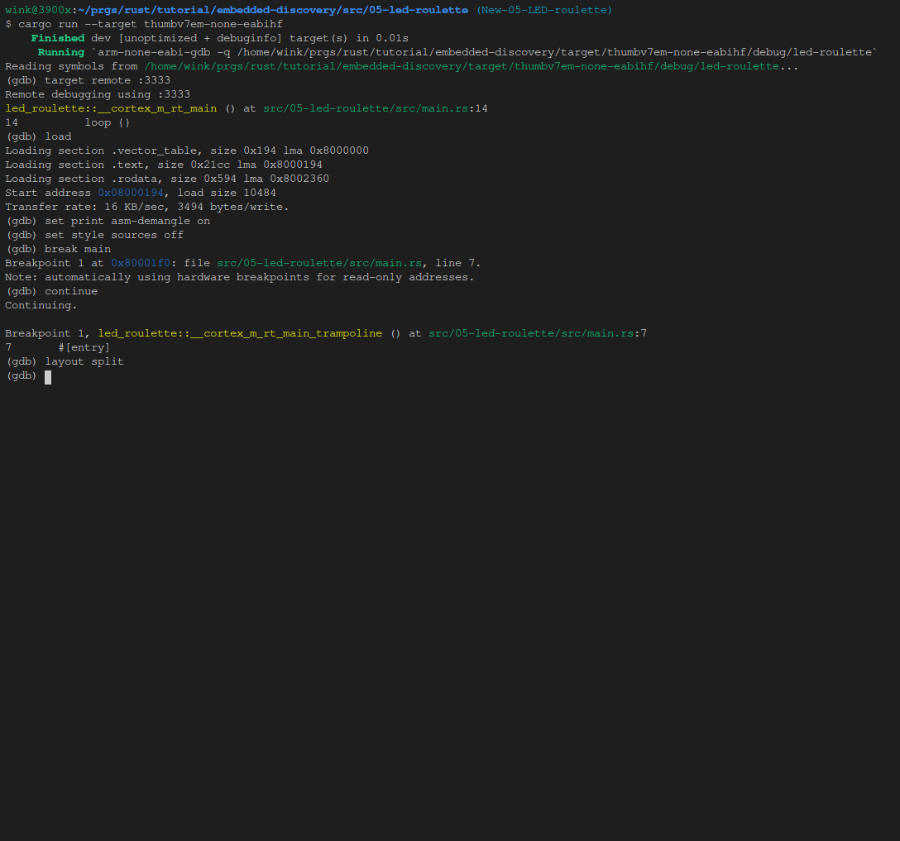

调试
我们已经在调试会话中，所以让我们调试程序。
在load命令之后，我们的程序在入口点停止。这由GDB输出的"起始地址 0x8000XXX"部分表示。
入口点是处理器/CPU将首先执行的程序的一部分。
我向您提供的starter项目有一些在main函数之前运行的额外代码。此时 我们对"pre-main"部分不感兴趣，所以
让我们直接跳到main函数的开头。我们将使用断点来实现这一点。在(gdb)提示符下发出break main：
注意：对于这些GDB命令，我通常不会提供可复制的代码块，因为这些代码块很短，而且自己输入会更快。 此外，大多数可以缩短。例如，
b表示break或s表示step，请参阅GDB快速参考以获取更多信息或使用谷歌查找其他。 此外，您可以使用制表符完成，方法是输入一个制表符以外的前几个字母来完成，或者输入两个制表符来查看所有可能的命令。最后，
help xxxx其中xxxx是命令将提供短名称和其他信息：(gdb) help s step, s Step program until it reaches a different source line. Usage: step [N] Argument N means step N times (or till program stops for another reason).
(gdb) break main
Breakpoint 1 at 0x80001f0: file src/05-led-roulette/src/main.rs, line 7.
Note: automatically using hardware breakpoints for read-only addresses.
下一步发出continue命令：
(gdb) continue
Continuing.
Breakpoint 1, led_roulette::__cortex_m_rt_main_trampoline () at src/05-led-roulette/src/main.rs:7
7 #[entry]
断点可用于停止程序的正常流程。continue命令将允许程序自由运行直到到达断点。在这种情况下，
直到它到达#[entry]，这是主函数的跳点，其中break main设置断点。
注意：GDB输出显示"Breakpoint 1"。请记住，我们的处理器只能使用这些断点中的六个，所以最好注意这些消息。
好的。由于我们停在#[entry]使用disassemble /m我们看到了entry的代码，这是一个主要点跳点。
这意味着它建立堆栈，然后使用ARM分支和链接指令bl调用main函数的子例程调用。
(gdb) disassemble /m
Dump of assembler code for function main:
7 #[entry]
0x080001ec <+0>: push {r7, lr}
0x080001ee <+2>: mov r7, sp
=> 0x080001f0 <+4>: bl 0x80001f6 <_ZN12led_roulette18__cortex_m_rt_main17he61ef18c060014a5E>
0x080001f4 <+8>: udf #254 ; 0xfe
End of assembler dump.
接下来，我们需要发出一个stepGDB命令，该命令将逐步将程序语句推进到函数/过程中。
因此，在这个第一步命令之后，我们进入main，位于第一个可执行的rust语句第10行，但它没有被执行：
(gdb) step
led_roulette::__cortex_m_rt_main () at src/05-led-roulette/src/main.rs:10
10 let x = 42;
接下来，我们将发出第二个step, 该步骤执行第10行并停止在第11行11 _y = x;，再次不执行第11行
注意：我们可以在第二个
(gdb)提示符处按enter，它会重新发出前面的语句step， 但为了清楚起见，在本教程中，我们通常会重新输入命令。
(gdb) step
11 _y = x;
如您所见，在这种模式下，在每个step中，GDB都会打印当前语句及其行号。正如您稍后在TUI模式中看到的，您将在命令区域中看不到该语句。
我们现在开始"在"_y = x语句；该声明尚未执行。这意味着x已初始化，但_y未初始化。
让我们使用print命令检查这些堆栈/局部变量，简称p：
(gdb) print x
$1 = 42
(gdb) p &x
$2 = (*mut i32) 0x20009fe0
(gdb) p _y
$3 = 536870912
(gdb) p &_y
$4 = (*mut i32) 0x20009fe4
正如预期的那样，x包含值42。但_y包含值536870912 (?)。这是因为_y尚未初始化，它包含一些垃圾值。
命令print &x打印变量x的地址。这里有趣的是，GDB输出显示了引用的类型：*mut i32，一个指向i32值的可变指针。
另一个有趣的事情是，x和_y的地址彼此非常接近：们的地址仅相隔4个字节。
您也可以使用info locals命令，而不是逐个打印局部变量：
(gdb) info locals
x = 42
_y = 536870912
好的。下一个step命令我们将在loop {}语句的顶部：
(gdb) step
14 loop {}
现在应该初始化_y。
(gdb) print _y
$5 = 42
如果我们在loop {}语句的顶部再次使用step，我们将陷入困境，因为程序永远不会传递该语句。
注意：如果您错误地使用了
step或任何其他命令，并且GDB卡住了，您可以按Ctrl+C将其松开。
如上所述，disassemble /m命令可用反汇编当前所在行的程序。您可能还希望将set print asm-demangle on设置为打开，
以便对名称进行解映射，这只需要在调试会话中执行一次。稍后，此命令和其他命令将放置在初始化文件中，这将简化调试会话的启动。
(gdb) set print asm-demangle on
(gdb) disassemble /m
Dump of assembler code for function _ZN12led_roulette18__cortex_m_rt_main17h51e7c3daad2af251E:
8 fn main() -> ! {
0x080001f6 <+0>: sub sp, #8
0x080001f8 <+2>: movs r0, #42 ; 0x2a
9 let _y;
10 let x = 42;
0x080001fa <+4>: str r0, [sp, #0]
11 _y = x;
0x080001fc <+6>: str r0, [sp, #4]
12
13 // infinite loop; just so we don't leave this stack frame
14 loop {}
=> 0x080001fe <+8>: b.n 0x8000200 <led_roulette::__cortex_m_rt_main+10>
0x08000200 <+10>: b.n 0x8000200 <led_roulette::__cortex_m_rt_main+10>
End of assembler dump.
看到左侧的=>胖箭头了吗? 它显示处理器接下来要执行的指令。
此外，如上所述，如果您要执行step命令，GDB会卡住，因为它正在执行一条到自身的分支指令，并且永远无法通过它。
因此，您需要使用Ctrl+C重新获得控制权。另一种方法是使用stepi(si)GDB命令，它执行一条asm指令，
GDB将打印处理器下一步将执行的语句的地址和行号，并且不会卡住。
(gdb) stepi
0x08000194 14 loop {}
(gdb) si
0x08000194 14 loop {}
在我们转向更有趣的事情之前，最后一个技巧。在GDB中输入以下命令：
(gdb) monitor reset halt
Unable to match requested speed 1000 kHz, using 950 kHz
Unable to match requested speed 1000 kHz, using 950 kHz
adapter speed: 950 kHz
target halted due to debug-request, current mode: Thread
xPSR: 0x01000000 pc: 0x08000194 msp: 0x2000a000
(gdb) continue
Continuing.
Breakpoint 1, led_roulette::__cortex_m_rt_main_trampoline () at src/05-led-roulette/src/main.rs:7
7 #[entry]
(gdb) disassemble /m
Dump of assembler code for function main:
7 #[entry]
0x080001ec <+0>: push {r7, lr}
0x080001ee <+2>: mov r7, sp
=> 0x080001f0 <+4>: bl 0x80001f6 <led_roulette::__cortex_m_rt_main>
0x080001f4 <+8>: udf #254 ; 0xfe
End of assembler dump.
我们现在又回到了#[entry]开头！
monitor reset halt将重置微控制器，并在程序开始时立即停止。然后continue命令将允许程序自由运行，
直到到达断点，在本例中，它是#[entry]处的断点。
当您错误地跳过了您感兴趣检查的程序的一部分时，此组合非常方便。您可以轻松地将程序的状态回滚到最开始。
细节：此
reset命令不会清除或触及RAM。该内存将保留上次运行时的值。这应该不是问题，除非 程序的行为取决于未初始化变量的值，但这是未定义行为（UB）的定义。
我们已完成此调试会话。你可以用quit命令结束它。
(gdb) quit
A debugging session is active.
Inferior 1 [Remote target] will be detached.
Quit anyway? (y or n) y
Detaching from program: $PWD/target/thumbv7em-none-eabihf/debug/led-roulette, Remote target
Ending remote debugging.
为了获得更好的调试体验，您可以使用GDB的文本用户界面(TUI)。要进入该模式，请在GDB shell中输入以下命令之一：
(gdb) layout src
(gdb) layout asm
(gdb) layout split
注意：向Windows用户道歉，GNU ARM嵌入式工具链附带的GDB可能不支持此TUI模式
:-(。
下面是通过执行以下命令设置layout split的示例。如您所见，我们已经放弃传递--target参数：
$ cargo run
(gdb) target remote :3333
(gdb) load
(gdb) set print asm-demangle on
(gdb) set style sources off
(gdb) break main
(gdb) continue
这里有一个命令行，将上述命令作为-ex参数，以节省您的键入时间，不久我们将提供一种更简单的方法来执行初始命令集：
cargo run -- -q -ex 'target remote :3333' -ex 'load' -ex 'set print asm-demangle on' -ex 'set style sources off' -ex 'b main' -ex 'c' target/thumbv7em-none-eabihf/debug/led-roulette
结果如下：

现在，我们将向下滚动顶部源窗口，以便查看整个文件并执行layout split，然后执行以下step：

然后我们将执行一些info locals和step's：
(gdb) info locals
(gdb) step
(gdb) info locals
(gdb) step
(gdb) info locals

在任何时候，您都可以使用以下命令离开TUI模式：
(gdb) tui disable

注意：如果您不喜欢默认的GDB CLI，请查看gdb仪表板。 它使用Python将默认GDB CLI转换为显示寄存器、源代码视图、程序集视图和其他内容的仪表板。
但不要关闭OpenOCD！稍后我们会反复使用它。最好让它继续运行。 如果您想了解更多有关GDB功能的信息，请查看何使用GDB一节。
接下来是什么？我承诺的高级API。